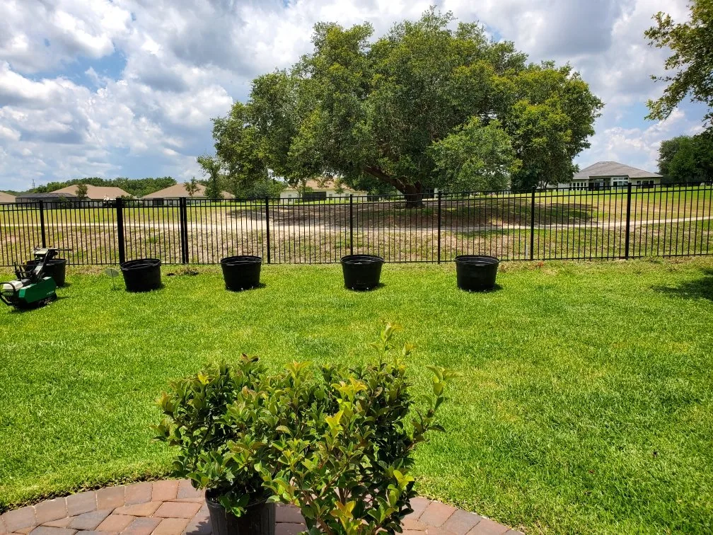
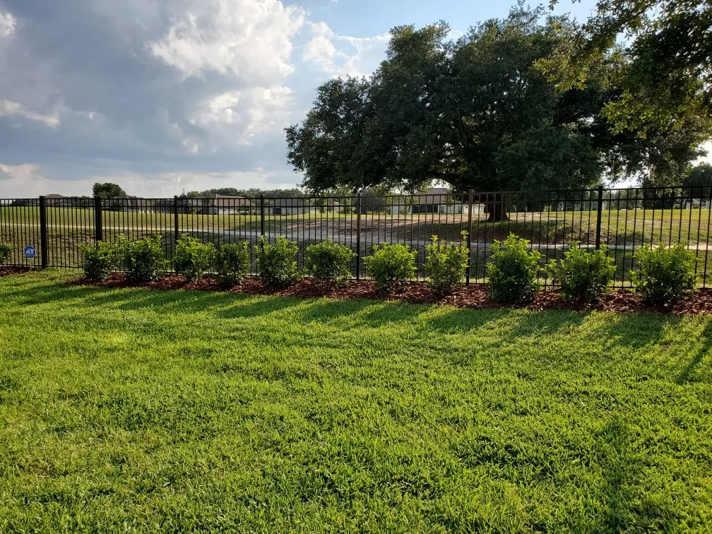

- Home
- Gallery
Our work
Real properties, in Central Florida.
Landscaping, hardscape, commercial planting and pressure washing — every photograph here is a Blue Fox job.
Before and after
Two of our own jobs.
A paver driveway in Longwood — drag the handle — and a Viburnum hedge planted along a fence line.


Blue Fox project · Paver driveway cleaning, Longwood, FL


Blue Fox project · Viburnum hedge installation
Free, no-obligation estimate
Yours could be on this page.
Tell us what you are thinking about and we will come and look at it.